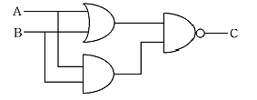
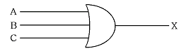
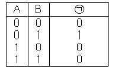
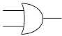
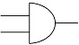
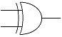
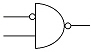
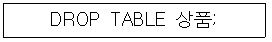
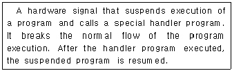

정보처리기능사 (2006-04-02 기출문제)
1과목: 전자 계산기 일반
1. 현재 수행 중에 있는 명령어 코드(Code)를 저장하고 있는 임시저장 장치는?
- 인덱스 레지스터(Index Register)
- 명령 레지스터(Instruction Register)
- 어큐뮬레이터(Accumulator)
- 메모리 레지스터(Memory Register)
(정답률: 82%)

2. 입력된 2개의 값들 중에서 어느 것이라도 참 값을 가지고 있으면 참이라는 결과를 출력하는 논리 연산 자는?
- NOT
- OR
- AND
- NAND
(정답률: 79%)
3. 다음 그림의 논리회로에서 출력 (C)은? (단, A=1, B=1이다.)

- 0
- 1
- 11
- 10
(정답률: 74%)
4. 2진수 0110을 그레이 코드로 변환하면?
- 0010
- 0111
- 0101
- 1110
(정답률: 70%)
5. 연산 후 입력 자료가 변하지 않고 보존되는 특징의 장점을 갖는 인스트럭션 형식은?
- 0-주소 인스트럭션
- 1-주소 인스트럭션
- 2-주소 인스트럭션
- 3-주소 인스트럭션
(정답률: 61%)
6. 주소부분에 있는 값이 실제 데이터가 있는 실제 기억 장치 내의 주소를 나타내며 단순한 변수 등을 액세스하는데 사용되는 주소 지정 방식은?
- 상대 Address
- 절대 Address
- 간접 Address
- 직접 Address
(정답률: 59%)
7. 중앙처리장치에서 명령이 실행된 차례를 제어하거나 특정 프로그램과 관련된 컴퓨터 시스템의 상태를 나타내고 유지해 두기 위한 제어 워드로서 실행중인 CPU의 상태를 포함하고 있는 것은?
- PSW
- SP
- MAR
- MBR
(정답률: 78%)
8. 입출력 장치와 주기억 장치 사이에 위치하여 데이터 처리 속도의 차이를 줄이는데 도움이 되는 장치는?
- 입출력 채널
- 명령 해독기
- 연산 장치
- 인덱스 레지스터
(정답률: 72%)
9. 입출력 장치의 동작 속도와 전자계산기 내부의 동작 속도를 맞추는데 사용되는 레지스터는?
- 시퀀스 레지스터(Sequence Register)
- 쉬프트 레지스터(Shift Register)
- 버퍼 레지스터(Buffer Register)
- 어드레스 레지스터(Address Register)
(정답률: 83%)
10. 누산기(Accumulator)에 대하여 바르게 설명한 것은?
- 다음에 수행할 명령어와 번지를 기억하는 장치이다.
- 연산 부호를 해독하는 장치이다.
- 연산 결과를 일시적으로 기억하는 장치이다.
- 현재 실행중인 연산 결과를 기억하는 장치이다.
(정답률: 67%)
11. 다음 논리 회로를 나타내는 불 대수식은?

- X = ABC
- X = A'+B'+C'
- X = AB+C
- X = A+B+C
(정답률: 75%)
12. 16진수 FF를 10진수로 나타내면?
- 254
- 255
- 256
- 257
(정답률: 71%)
13. 다음 논리식에서 (ㄱ)에 알맞은 것은?

- A'+B
- A'ㆍB
- A+B'
- AㆍB'
(정답률: 57%)
14. 명령어 구성에서 연산자의 기능에 해당하지 않는 것은?
- 입출력 기능
- 주소지정 기능
- 제어 기능
- 함수연산 기능
(정답률: 61%)
15. 특정한 장치에서 사용되는 정보를 다른 곳으로 전송하기 위하여 일정한 규칙에 따라 암호로 변환하는 장치는?
- 명령 계수기
- 명령 레지스터
- 부호기(Encoder)
- 해독기(Decoder)
(정답률: 66%)
16. 2진수 10110을 1의 보수(1' Complement)로 표현한 것은?
- 11110
- 01000
- 00110
- 01001
(정답률: 83%)
17. 불(Boolean)대수의 정리 중 옳지 않은 것은?
- X+X = X
- XㆍX = X
- Xㆍ0 = X
- X + 0 = X
(정답률: 72%)
18. 수치연산은 입력되는 수에 따라 단항 및 이항연산으로 구분되는데 이항연산에 해당하지 않는 것은?
- AND
- MOVE
- OR
- ADD
(정답률: 48%)
19. 제어논리장치(CLU)와 산술논리연산장치(ALU)의 실행 순서를 제어하기 위해 사용되는 레지스터는?
- 누산기(Accumulator)
- 프로그램 상태 워드(PSW)
- 명령 레지스터(Instruction Register)
- 플래그 레지스터(Flag Register)
(정답률: 51%)
20. 다음 중 합집합 A U B로 나타낼 수 있는 회로는?




(정답률: 53%)
2과목: 패키지 활용
21. 테이블에서 각 레코드를 식별할 수 있는 유일한 값을 갖는 필드를 무엇이라 하는가?
- 파일
- 블록
- 기본키
- 레코드
(정답률: 52%)
22. 프레젠테이션에서 사용하는 하나의 화면을 의미하는 것은?
- 셀
- 슬라이드
- 워크시트
- 프로젝트
(정답률: 84%)
23. DBA의 역할로 거리가 먼 것은?
- 스키마 정의
- 데이터 사전의 유지관리
- 저장구조와 접근방법 선정
- 응용프로그램의 설계 및 개발
(정답률: 65%)
24. SQL문의 형식으로 적당하지 않은 것은?
- SELECT - FROM - WHERE
- UPDATE - FROM - WHERE
- INSERT - INTO - VALUES
- DELETE - FROM - WHERE
(정답률: 69%)
25. SQL에서 데이터베이스에 대한 일련의 처리를 하나로 모은 작업단위로 관리할 수 있다. 이 작업 단위를 무엇이라고 하는가?
- 페이징(Paging)
- 디스패치(Dispatch)
- 스풀링(Spooling)
- 트랜잭션(Transaction)
(정답률: 48%)
26. 데이터베이스 개체(Entity)의 속성 중 하나의 속성이 가질 수 있는 모든 값의 집합을 무엇이라고 하는가?
- 객체(Object)
- 속성(Attribute)
- 도메인(Domain)
- 레코드 타입(Record Type)
(정답률: 75%)
27. SQL에서 기본테이블을 생성하는 명령은?
- CREATE
- SELECT
- DROP
- UPDATE
(정답률: 74%)
28. 다음 SQL 질의어의 의미로 가장 적절한 것은?

- 상품 테이블의 인덱스만을 제거하라.
- 상품 필드가 키인 인덱스를 제거하라.
- 상품 테이블을 삭제하라.
- 상품 필드를 제거하라.
(정답률: 79%)
29. 윈도우용 프레젠테이션에서 하나의 화면을 구성하는 개개의 요소들을 무엇이라 하는가?
- 시나리오
- 개요
- 스크린 팁
- 개체(Object)
(정답률: 74%)
30. 기업체의 발표회나 각종 회의 등에서 빔 프로젝트 등을 이용하여 제품에 대한 소개나 회의 내용을 요약 정리하여 청중에게 효과적으로 전달하기 위한 도구를 의미하는 것은?
- 프레젠테이션
- 데이터베이스
- 스프레드시트
- 워드프로세서
(정답률: 86%)
3과목: PC 운영 체제
31. 시스템의 성능을 극대화하기 위한 운영체제의 목적으로 옳지 않은 것은?
- 처리 능력 증대
- 사용 가능도 증대
- 신뢰도 향상
- 응답시간 지연
(정답률: 79%)
32. 도스(MS-DOS)의 COMMAND.COM에서 직접 처리되는 명령어가 아닌 것은?
- DIR
- COPY
- CLS
- DISKCOPY
(정답률: 55%)
33. 현재의 작업 디렉토리를 나타내기 위한 UNIX 명령어는?
- cd
- pwd
- kill
- cp
(정답률: 69%)
34. UNIX에서 파일의 내용을 화면에 보여주는 명령은?
- rm
- cat
- mv
- type
(정답률: 68%)
35. 윈도98에서 ‘디스크 조각 모음’에 대한 설명으로 옳지 않은 것은?
- 디스크 조각 모음은 불량(Bad) 섹터를 치료해 준다.
- 사용 중인 디스크의 효율 향상을 위하여 수행한다.
- 디스크 조각 모음 작업 중에도 다른 작업을 수행할 수 있다.
- 하드디스크뿐만 아니라 플로피디스크도 조각 모음을 할 수 있다.
(정답률: 50%)
36. 도스(MS-DOS)에서 파일을 읽기 전용 속성으로 지정하는 명령어는?
- ATTRIB + H
- ATTRIB + V
- ATTRIB + R
- ATTRIB + A
(정답률: 74%)
37. 다음은 무엇에 대한 설명인가?

- Interrupt
- Polling
- Method Invocation
- Virus
(정답률: 62%)
38. 윈도98에서 선택된 아이콘을 다른 폴더로 이동 또는 복사하기 위하여 아이콘을 선택한 후 왼쪽 버튼을 누른 채 원하는 곳에 끌어다 놓은 후 마우스 왼쪽 버튼을 놓는 마우스 동작 방법은?
- Click
- Double Click
- Drag And Drop
- Click And Drop
(정답률: 74%)
39. 인터럽트(Interrupt)의 종류로서 옳지 않은 것은?
- Supervisor Call Interrupt
- I/O interrupt
- External Interrupt
- Virtual Machine Interrupt
(정답률: 48%)
40. UNIX의 구성요소를 크게 세 부분으로 나눌 때 이에 해당되지 않는 것은?
- 커널(Kernel)
- 쉘(Shell)
- 포트(Port)
- 유틸리티(Utility)
(정답률: 65%)
41. 스풀링과 버퍼링에 대한 설명 중 옳지 않은 것은?
- 스풀링은 저속의 입출력장치와 고속의 CPU 간의 속도차이를 해소하기 위한 방법이다.
- 버퍼링은 주기억장치의 일부를 버퍼로 사용 한다.
- 버퍼링은 송신자와 수신자의 속도차이를 해결하기 위하여 사용한다.
- 버퍼링은 서로 다른 여러 작업에 대한 입력과 출력 계산을 동시에 수행한다.
(정답률: 59%)
42. 윈도98의 탐색기에서 파일이나 폴더를 같은 드라이브로 이동하는 방법 및 선택방법으로 옳지 않은 것은?
- 비연속적인 여러 개의 파일이나 폴더를 선택할 경우 Shift 단축키를 사용한다.
- 마우스의 오른쪽 단추를 누른 후 드래그 앤 드롭을 이용하여 이동한다.
- 마우스의 왼쪽 단추로 드래그 앤 드롭을 이용하여 이동한다.
- 이동할 파일이나 폴더의 전체 항목을 선택하는 단축키는 Ctrl + A 이다.
(정답률: 57%)
43. 현재 디렉토리(Directory)의 내용을 확인하기 위하여 도스의 DIR 명령을 사용한 경우 화면에 가장 많은 파일을 표현할 수 있는 명령방식은?
- DIR/W
- DIR/P
- DIR
- DIR *.*
(정답률: 57%)
44. 사용자의 편의를 위해 사용 빈도가 높은 프로그램을 시스템 제공자가 미리 작성하여 사용자에게 제공해 주는 처리 프로그램은?
- 감시(Supervisor) 프로그램
- 작업 관리(Job Management) 프로그램
- 데이터 관리(Data Management) 프로그램
- 서비스(Service) 프로그램
(정답률: 59%)
45. 도스(MS-DOS)에서 외부명령어가 아닌 것은?
- FORMAT
- COPY
- CHKDSK
- LABEL
(정답률: 63%)
46. 윈도98에서 하드웨어 장치를 장착하면 자동 인식하는 것을 무엇이라고 하는가?
- 멀티태스킹(Multi-Tasking)
- 오토 컨넥트(Auto-Connect)
- 드래그 앤 드롭(Drag And Drop)
- 플러그 앤 플레이(Plug & Play)
(정답률: 71%)
47. Which of the following is correct answer about batch processing system?
- Data processing system which requires immediate process when the data generated like seat reservation for airplane or train.
- The method that process data collected until it become some quantity or for some period of time at on time.
- The system which has many processors is to program dividing into more than two jobs concurrently under control processors.
- A terminal like device equipped with button, dials that enables the operator to communicate with computer.
(정답률: 46%)
48. 도스(MS-DOS)에서 시스템 부팅시 반드시 필요한 파일이 아닌 것은?
- IO.SYS
- MSDOS.SYS
- COMMAND.COM
- CONFIG.SYS
(정답률: 63%)
49. 다중프로그래밍 상에서 두 개의 프로세스가 실행 중에 있게 되면 각 프로세스는 자신이 필요한 자원을 가지고 실행되다가 서로 자신이 점유하고 있는 자원을 포기하지 않은 상태에서 다른 프로세스가 자원을 요구하는 경우가 발생된다. 이 경우 두 프로세스는 모두 더 이상 실행을 할 수 없게 되는데 이러한 현상을 무엇이라고 하는가?
- 교착상태(Dead Lock)
- 세마포어(Semaphore)
- 가상시스템(Virtual System)
- 임계영역(Critical Section)
(정답률: 81%)
50. 준비상태(Ready)에 있는 프로세스들 중에서 우선순위가 가장 높은 프로세스를 선택하여 CPU를 할당(Running 상태)하는 것을 무엇이라 하는가?
- 디스페치(Dispatch)
- 타이머 종료(Timer Run Out)
- 사건 대기(Event Wait)
- 깨어남(Wake Up)
(정답률: 70%)
4과목: 정보 통신 일반
51. 보(Baud) 속도가 1,600[baud]이며 트리비트(Tribit)를 사용하는 경우의 속도는?
- 1,600[bps]
- 2,400[bps]
- 4,800[bps]
- 9,600[bps]
(정답률: 72%)
52. 텔레비전과 전화의 연결에 의한 정보 서비스는?
- 텔레텍스트(Teltext)
- 텔레텍스(Teletex)
- CATV
- 비디오텍스(Videotex)
(정답률: 27%)
53. 다음 중 광섬유의 전송 특성으로 잘못된 것은?
- 전자기적 누화가 없다.
- 많은 회선의 집속화가 가능하다.
- 클래딩에 의해 신호의 전송이 이루어진다.
- 저손실로 장거리 전송이 가능하다.
(정답률: 36%)
54. 정지위성의 위치는 지구의 적도 상공 약 몇 [Km] 정도인가?
- 25,000
- 36,000
- 45,000
- 56,000
(정답률: 67%)
55. 음성 및 비음성 통신 서비스를 통한한 종합정보통신망은?
- PS수
- ISDN
- IS수
- VAN
(정답률: 41%)
56. 100[MHz]의 반송파를 최대 주파수 편이가 60[KHz]이고 신호파 주파수가 10k[KHz]로 FM 변조하였을 때 변조 지수(mf) 는?
- 4
- 6
- 8
- 10
(정답률: 52%)
57. 은행창구의 거래 상황을 처리해 주는 응용 분야는?
- 공정 제어
- 시차 배분
- 거래 처리
- 전자 메일
(정답률: 62%)
58. 데이터 링크 계층에서 감시 시퀀스의 전송제어문자 중 ‘ACK'의 설명으로 옳은 것은?
- 응답을 요구하는 부호이다.
- 부정적인 의미를 나타낸다.
- 수신측에서 문자 동기를 취하기 위해서 사용한다.
- 오류 검출 결과 정확한 정보를 수신하였음을 나타낸다.
(정답률: 42%)
59. 다음 중 다중화 방식의 종류에 해당되지 않는 것은?
- FDM
- TDM
- COM
- WDM
(정답률: 43%)
60. 다음 중 데이터 통신 교환방식이 아닌 것은?
- 메시지 교환방식
- 패킷 교환방식
- 기계 교환방식
- 회선 교환방식
(정답률: 58%)